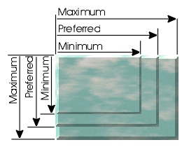
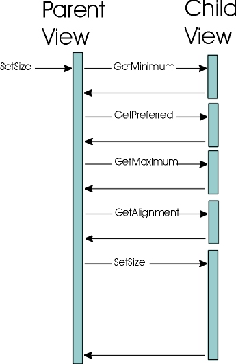

public abstract class View extends Object implements SwingConstants
文本的包装的一个重要组成部分是View类。顾名思义，它代表了文本模型的视图，或文本模型的一部分。正是这个类负责对文本组件的外观。视图不打算是一个完全新的东西，一个人必须学习，而是非常像一个轻量级组件。
默认情况下，视图是非常轻的。它包含一个参考它可以卖很多东西没有保持状态的父视图，它包含一个参考模型的一部分（Element）。视图不必精确地表示模型中的一个元素，这只是一个典型的，因此方便的映射。视图可以选择保持两个位置对象以保持模型中的位置（即表示元素的一个片段）。这通常是视图已被分解成碎片的格式的结果。与元素的大量关系的方便性使它更容易建立工厂生产的意见，并使它更容易保持跟踪的视图件，模型被改变，必须改变视图，以反映模型。因此，简单的视图直接表示一个元素，而复杂的视图不代表一个元素。
一个视图有以下职责：
该视图有一个setSize方法是doLayout和setSize在Component组合。该视图有一个preferenceChanged方法是invalidate在Component除了可以使只是一轴孩子要求改变是确定的。
一个视图表示它想在三个值，一个最小值，一个优选的，和一个最大跨度的大小。视图中的布局可以在每个轴上独立完成。对于一个正确的功能视图实现，最小跨度将是“首选跨度”，这将是“最大跨度”。

布局的最小集合的方法是：
的setSize方法应该准备被称为次数（即它可能即便大小变化不叫）。的setSize方法通常称为确保视图布局完成之前，要对它进行操作，需要一个新的布局。视图的大小应该始终被设置为在该视图指定的最小和最大跨度内的值。此外，视图必须总是在改变值的布局就呼吁家长preferenceChanged方法，希望家长的荣誉。父视图不需要认识到改变直到preferenceChanged已发送。这允许父视图实现缓存孩子的需求，如果需要的话。调用序列看起来像以下的东西：

确切的调用序列取决于父视图的布局功能（如果视图有任何子视图）。该视图可以收集孩子们的喜好，在确定它会给每个孩子，或者它可能会迭代更新一次一个孩子。
这是在油漆方法，这是相当像一个组件的油漆方法。预计将有可能填充一个相当大的树。一个View具有语义的渲染：
Component相同（即Component由getContainer方法返回）。这意味着一个子视图在同一个坐标系中的生命，除非父已显式地改变了坐标系。计划本身要重画视图可以调用的托管Component重画。Graphics对象是不以任何方式初始化。视图应该设置所需的设置。View本质上是透明的。虽然一个视图可以呈现为它的整个分配，通常一个视图不。渲染是通过降低View树进行实现。每个View负责绘制它的孩子。这种行为取决于线程安全性。虽然视图实现不一定要实现与线程安全性，其他视图实现，使用并发可以依赖于树遍历，以保证线程安全。渲染的方法是：
因为视图对象是从一个工厂生产的，因此不一定可以被计算在一个特定的模式，一个必须能够执行翻译，以正确定位模型的空间表示。做这件事的方法是：
在试图进行翻译之前，布局必须是有效的。翻译是无效的，不能企图改变正在播放从模型通过DocumentEvent。
如果整体观是由许多块代表（这是最好的情况，如果你希望能够改变观点和新代码最少写），会有大量的DocumentListeners不切实际。如果每个观听的模式，只有少数人会真的在改变广播在任何给定的时间感兴趣。由于该模型没有知识的意见，它没有办法过滤的变化信息的广播。视图层次结构本身是负责传播更改信息的。在视图层次结构中的任何层次上，该视图都知道足够的关于它的子视图来最好地分发这些更改信息。因此，广播的变化从视图层次结构的根。做这件事的方法是：
| Modifier and Type | Field and Description |
|---|---|
static int |
BadBreakWeight
权重表示一个视图是一个坏的休息机会，为格式化的目的。
|
static int |
ExcellentBreakWeight
重量表示一个视图支持打破，这是一个非常有吸引力的休息的地方。
|
static int |
ForcedBreakWeight
重量表示一个视图支持打破，必须被打破，以适当的方式表示时，放置在一个视图，通过打破他们的孩子们的格式。
|
static int |
GoodBreakWeight
权重表示一个视图支持断裂，但可能存在更好的机会。
|
static int |
X_AXIS
格式化/中断操作轴。
|
static int |
Y_AXIS
格式化/中断操作轴。
|
BOTTOM, CENTER, EAST, HORIZONTAL, LEADING, LEFT, NEXT, NORTH, NORTH_EAST, NORTH_WEST, PREVIOUS, RIGHT, SOUTH, SOUTH_EAST, SOUTH_WEST, TOP, TRAILING, VERTICAL, WEST| Modifier and Type | Method and Description |
|---|---|
void |
append(View v)
在一个孩子的观点。
|
View |
breakView(int axis, int offset, float pos, float len)
试图打破这个视图在给定的轴上。
|
void |
changedUpdate(DocumentEvent e, Shape a, ViewFactory f)
从该视图负责的位置上更改属性的文档的通知。
|
View |
createFragment(int p0, int p1)
创建表示元素的一部分的视图。
|
protected void |
forwardUpdate(DocumentEvent.ElementChange ec, DocumentEvent e, Shape a, ViewFactory f)
提出了
DocumentEvent，需要通知的变化对模型的子视图。
|
protected void |
forwardUpdateToView(View v, DocumentEvent e, Shape a, ViewFactory f)
将
DocumentEvent去给孩子看。
|
float |
getAlignment(int axis)
沿着一个轴确定此视图所需的对齐方式。
|
AttributeSet |
getAttributes()
读取属性时要使用的渲染。
|
int |
getBreakWeight(int axis, float pos, float len)
确定如何有吸引力的突破机会，在这种观点是。
|
Shape |
getChildAllocation(int index, Shape a)
获取给定的子视图的配置。
|
Container |
getContainer()
获取主机视图的容器。
|
Document |
getDocument()
与视图相关的模型。
|
Element |
getElement()
带来的主体结构部分，这一观点被映射到。
|
int |
getEndOffset()
提取的模型，这是负责的部分。
|
Graphics |
getGraphics()
拿一
Graphics渲染。
|
float |
getMaximumSpan(int axis)
沿着一个轴确定该视图的最大跨度。
|
float |
getMinimumSpan(int axis)
沿着一个轴确定该视图的最小间距。
|
int |
getNextVisualPositionFrom(int pos, Position.Bias b, Shape a, int direction, Position.Bias[] biasRet)
提供了一种方法来确定下一个直观模型的位置在哪一个可能的地方插入。
|
View |
getParent()
返回视图的父视图。
|
abstract float |
getPreferredSpan(int axis)
沿着一个轴确定该视图的首选跨度。
|
int |
getResizeWeight(int axis)
确定沿给定的轴视图的大小可调整。
|
int |
getStartOffset()
提取的模型，这是负责的部分。
|
String |
getToolTipText(float x, float y, Shape allocation)
返回指定位置的工具提示文本。
|
View |
getView(int n)
得到n子视图。
|
int |
getViewCount()
返回此视图中的视图数量。
|
ViewFactory |
getViewFactory()
取
ViewFactory实现饲养这个视图层次。
|
int |
getViewIndex(float x, float y, Shape allocation)
返回表示视图中给定位置的子视图索引。
|
int |
getViewIndex(int pos, Position.Bias b)
返回表示模型中给定位置的子视图索引。
|
void |
insert(int offs, View v)
插入一个单一的子视图。
|
void |
insertUpdate(DocumentEvent e, Shape a, ViewFactory f)
给出了一个在该视图负责的位置上插入到文档中的通知。
|
boolean |
isVisible()
返回一个布尔值，该值指示是否可见或不可见。
|
Shape |
modelToView(int p0, Position.Bias b0, int p1, Position.Bias b1, Shape a)
提供了一个映射，对于一个给定区域，从文档模型坐标空间到视图坐标空间。
|
Shape |
modelToView(int pos, Shape a)
过时的。
|
abstract Shape |
modelToView(int pos, Shape a, Position.Bias b)
提供了一个映射，对于一个给定的字符，从文档模型坐标空间到视图坐标空间。
|
abstract void |
paint(Graphics g, Shape allocation)
使用给定的渲染表面和表面上的区域。
|
void |
preferenceChanged(View child, boolean width, boolean height)
孩子的看法可以称这对父母表示偏好发生了变化，应重新布局。
|
void |
remove(int i)
移除给定位置的一个孩子。
|
void |
removeAll()
移除所有的孩子。
|
void |
removeUpdate(DocumentEvent e, Shape a, ViewFactory f)
给予通知，该视图是由该视图负责的位置中的某个文件被删除的。
|
void |
replace(int offset, int length, View[] views)
替换子视图。
|
void |
setParent(View parent)
为此视图建立父视图。
|
void |
setSize(float width, float height)
设置视图的大小。
|
protected boolean |
updateChildren(DocumentEvent.ElementChange ec, DocumentEvent e, ViewFactory f)
更新子视图响应接收到的通知，该模型改变了，并且该视图的元素的更改记录是负责的。
|
protected void |
updateLayout(DocumentEvent.ElementChange ec, DocumentEvent e, Shape a)
响应来自模型的更改的通知更新布局。
|
int |
viewToModel(float x, float y, Shape a)
过时的。
|
abstract int |
viewToModel(float x, float y, Shape a, Position.Bias[] biasReturn)
从视图坐标空间提供一个映射到模型的逻辑坐标空间。
|
public static final int BadBreakWeight
public static final int GoodBreakWeight
public static final int ExcellentBreakWeight
public static final int ForcedBreakWeight
public static final int X_AXIS
public static final int Y_AXIS
public View(Element elem)
View对象。
elem -
Element代表
public View getParent()
null如果不存在
public boolean isVisible()
public abstract float getPreferredSpan(int axis)
axis -可能是
View.X_AXIS或
View.Y_AXIS
getPreferredSpan(int)
public float getMinimumSpan(int axis)
axis -可能是
View.X_AXIS或
View.Y_AXIS
getPreferredSpan(int)
public float getMaximumSpan(int axis)
axis -可能是
View.X_AXIS或
View.Y_AXIS
getPreferredSpan(int)
public void preferenceChanged(View child, boolean width, boolean height)
revalidate对相关文本组件。
child -子视图
width -如果宽度偏好发生了变化
height -如果身高偏好发生了变化
JComponent.revalidate()
public float getAlignment(int axis)
axis -可能是
View.X_AXIS或
View.Y_AXIS
public abstract void paint(Graphics g, Shape allocation)
g -绘制表面使用
allocation -分配区域进行渲染
public void setParent(View parent)
super.setParent()应该叫。
parent -新的母公司，或
null如果视图是从父删除
public int getViewCount()
getViewCount()
public View getView(int n)
null。
n使视图的数量，>＝0和＜getviewcount()
public void removeAll()
replace。
public void remove(int i)
replace。
public void insert(int offs,
View v)
replace。
offs -观前插入> = 0的偏移
v -视图
replace(int, int, javax.swing.text.View[])
public void append(View v)
replace。
v -视图
replace(int, int, javax.swing.text.View[])
public void replace(int offset,
int length,
View[] views)
null，且他们的内部参考移除以便他们可以被垃圾收集。这是实现什么都不做，因为默认情况下没有孩子。
offset的起始索引到子视图插入新的看法。这应该是一个价值> = 0 < = getviewcount
length -现有的子视图的数量来消除这应该是一个价值> = 0 < =（getviewcount()偏移）。
views -子视图添加。这个值可以
null表示没有孩子被添加（有用的去除）。
public int getViewIndex(int pos,
Position.Bias b)
pos --位置> = 0
public Shape getChildAllocation(int index, Shape a)
null因为默认是没有任何子视图。
index -孩子的指数，>＝0和＜
getViewCount()
a -配置这一观点
public int getNextVisualPositionFrom(int pos,
Position.Bias b,
Shape a,
int direction,
Position.Bias[] biasRet)
throws BadLocationException
BadLocationException。
pos的位置转换
a -分配区域，使
direction -这可以被认为是箭头键通常发现键盘上的当前位置的方向。这将是下列值之一：
BadLocationException -给定的位置不在有效的文档位置
IllegalArgumentException -如果
direction没有一个合法的值以上
public abstract Shape modelToView(int pos, Shape a, Position.Bias b) throws BadLocationException
pos -所需的字符的位置（> = 0）
a -视图的区域，其中包含请求的字符
b -偏向前一个字符或下一个字符的偏移量表示，如果位置是两视图边界；
b将有以下值之一：
Position.Bias.ForwardPosition.Bias.BackwardBadLocationException -如果指定的位置不在相关文件表示一个有效的位置
IllegalArgumentException -如果
b不是一个法律
Position.Bias值以上
viewToModel(float, float, java.awt.Shape, javax.swing.text.Position.Bias[])
public Shape modelToView(int p0, Position.Bias b0, int p1, Position.Bias b1, Shape a) throws BadLocationException
p0 -第一个字符的位置（> = 0）
b0 -第一个字符位置的偏差，对前一个字符或下一个字符的偏移量表示，如果位置是两视图边界；
b0将有以下值之一：
Position.Bias.ForwardPosition.Bias.Backwardp1 -最后一个字符的位置（> = 0）
b1 -第二字符位置的偏差，定义一个以上的法律价值
a -视图的区域，其中包含请求的区域
BadLocationException -如果给定的位置不在相关文件表示一个有效的位置
IllegalArgumentException -如果
b0或
b1不是上面列出的法律
Position.Bias值
viewToModel(float, float, java.awt.Shape, javax.swing.text.Position.Bias[])
public abstract int viewToModel(float x,
float y,
Shape a,
Position.Bias[] biasReturn)
biasReturn参数将被填充在表明，给出更接近下一个字符的模型或模型中的前一字符。
x - x坐标> = 0
y - Y坐标> = 0
a -分配区域，使
biasReturn参数将被填充在表明，给出更接近下一个字符的模型或模型中的前一字符。
public void insertUpdate(DocumentEvent e, Shape a, ViewFactory f)
updateChildren是如果有任何变化的元素这一观点负责人称。如果此视图有表示子元素的子视图，则该方法应该做任何必要的事情，以确保子视图正确地表示模型。forwardUpdate叫了documentevent到相应的子视图。updateLayout叫给视图一个机会来修复其布局，重新安排布局，或什么都不做。e -从相关文档的变更信息
a -视图的当前配置
f -工厂用重建如果视图有孩子
insertUpdate(javax.swing.event.DocumentEvent, java.awt.Shape, javax.swing.text.ViewFactory)
public void removeUpdate(DocumentEvent e, Shape a, ViewFactory f)
updateChildren是如果有任何变化的元素这一观点负责人称。如果此视图有表示子元素的子视图，则该方法应该做任何必要的事情，以确保子视图正确地表示模型。forwardUpdate叫了documentevent到相应的子视图。updateLayout叫给视图一个机会来修复其布局，重新安排布局，或什么都不做。e -从相关文档的变更信息
a -视图的当前配置
f -工厂用重建如果视图有孩子
removeUpdate(javax.swing.event.DocumentEvent, java.awt.Shape, javax.swing.text.ViewFactory)
public void changedUpdate(DocumentEvent e, Shape a, ViewFactory f)
updateChildren是如果有任何变化的元素这一观点负责人称。如果此视图有表示子元素的子视图，则该方法应该做任何必要的事情，以确保子视图正确地表示模型。forwardUpdate叫了documentevent到相应的子视图。updateLayout叫给视图一个机会来修复其布局，重新安排布局，或什么都不做。e -从相关文档的变更信息
a -视图的当前配置
f -工厂用重建如果视图有孩子
changedUpdate(javax.swing.event.DocumentEvent, java.awt.Shape, javax.swing.text.ViewFactory)
public Document getDocument()
null如果没有
getDocument()
public int getStartOffset()
getStartOffset()
public int getEndOffset()
getEndOffset()
public Element getElement()
getElement()
public Graphics getGraphics()
Graphics渲染。这可以用来确定字体的特性，并将不同的打印视图比组件视图。
Graphics对象
public AttributeSet getAttributes()
AttributeSet通过此方法返回的。
public View breakView(int axis, int offset, float pos, float len)
这是实现返回视图本身，它代表不易碎的默认行为。如果视图不支持断，视图返回的起始偏移应该是给定的偏移，并且结束偏移应该小于或等于视图的结束偏移量。
axis -可能是
View.X_AXIS或
View.Y_AXIS
offset -文档模型中的位置，一个破碎的片段会占用> = 0。这将是返回的片段的起始偏移量
pos的位置沿轴的断裂视图将占据> = 0。这可能是有用的东西，如标签计算
len -指定的距离沿轴线在一个潜在的突破需要> = 0
ParagraphView
public View createFragment(int p0, int p1)
p0 -起始偏移> = 0。这应该是一个大于或等于元素起始偏移量和小于元素结束偏移量的值的值。
p1 -结束偏移> P0。这应该是一个小于或等于元素结束偏移量和大于元素起始偏移量的值。
LabelView
public int getBreakWeight(int axis,
float pos,
float len)
breakView在格式化的过程。一种观点认为代表了空白，这可能比认为没有空格更吸引人的文字，例如。重量越高，断裂的吸引力越大。等于或低于
BadBreakWeight不应被视为一个突破。一个值大于或等于
ForcedBreakWeight应该被打破。
这是实施提供返回BadBreakWeight除非长度大于在这种情况下，整个视图代表片段长度的默认行为的看法。除非已经写了一个视图支持打破行为，它是没有吸引力的尝试和打破的看法。一种观点认为，不支持断LabelView例。一种观点认为，利用休息的一个例子是ParagraphView重量。
axis -可能是
View.X_AXIS或
View.Y_AXIS
pos的破断视图> = 0开始的可能的位置。这可能是有用的计算标签位置
len -指定的相对长度从POS在潜在破坏所需的> = 0
LabelView，
ParagraphView，
BadBreakWeight，
GoodBreakWeight，
ExcellentBreakWeight，
ForcedBreakWeight
public int getResizeWeight(int axis)
axis -可能是
View.X_AXIS或
View.Y_AXIS
public void setSize(float width,
float height)
width -宽度> = 0
height -高> = 0
public Container getContainer()
null
public ViewFactory getViewFactory()
ViewFactory实现饲养这个视图层次。通常情况下，作为一个参数，从模型中更新时，他们最有可能需要工厂的意见，但这种方法提供它在其他时间。
null
public String getToolTipText(float x, float y, Shape allocation)
JTextComponent.getToolTipText(java.awt.event.MouseEvent)
public int getViewIndex(float x,
float y,
Shape allocation)
x，
y。
x的X坐标
y的Y坐标
allocation -查看当前配置。
protected boolean updateChildren(DocumentEvent.ElementChange ec, DocumentEvent e, ViewFactory f)
ViewFactory用来创建每个元素指定在
ElementChange添加子视图，从给定的
ElementChange指定的索引。表示指定的删除元素的子视图的数目被删除。
ec的变化信息的元素这一观点负责。这不应该是
null如果这个方法被调用
e -从相关文档的变更信息
f -工厂用建立的子视图
insertUpdate(javax.swing.event.DocumentEvent, java.awt.Shape, javax.swing.text.ViewFactory)，
removeUpdate(javax.swing.event.DocumentEvent, java.awt.Shape, javax.swing.text.ViewFactory)，
changedUpdate(javax.swing.event.DocumentEvent, java.awt.Shape, javax.swing.text.ViewFactory)
protected void forwardUpdate(DocumentEvent.ElementChange ec, DocumentEvent e, Shape a, ViewFactory f)
DocumentEvent，需要通知的变化对模型的子视图。如果有更改的元素，这一观点是负责的，那应该被认为是当转发（即新的孩子的意见不应该得到通知）。
ec -更改元素这一观点负责（可能是
null如果没有变化）。
e -从相关文档的变更信息
a -视图的当前配置
f -工厂用重建如果视图有孩子
insertUpdate(javax.swing.event.DocumentEvent, java.awt.Shape, javax.swing.text.ViewFactory)，
removeUpdate(javax.swing.event.DocumentEvent, java.awt.Shape, javax.swing.text.ViewFactory)，
changedUpdate(javax.swing.event.DocumentEvent, java.awt.Shape, javax.swing.text.ViewFactory)
protected void forwardUpdateToView(View v, DocumentEvent e, Shape a, ViewFactory f)
DocumentEvent去给孩子看。这个简单的消息和电话
insertUpdate，
removeUpdate视图，或
changedUpdate根据事件的类型。这是被称为
forwardUpdate转发事件对儿童的需要。
v -子视图转发事件
e -从相关文档的变更信息
a -视图的当前配置
f -工厂用重建如果视图有孩子
forwardUpdate(javax.swing.event.DocumentEvent.ElementChange, javax.swing.event.DocumentEvent, java.awt.Shape, javax.swing.text.ViewFactory)
protected void updateLayout(DocumentEvent.ElementChange ec, DocumentEvent e, Shape a)
preferenceChanged重新安排一个新的布局如果
ElementChange记录不
null。
ec -更改元素这一观点负责（可能是
null如果没有变化）
e -从相关文档的变更信息
a -视图的当前配置
insertUpdate(javax.swing.event.DocumentEvent, java.awt.Shape, javax.swing.text.ViewFactory)，
removeUpdate(javax.swing.event.DocumentEvent, java.awt.Shape, javax.swing.text.ViewFactory)，
changedUpdate(javax.swing.event.DocumentEvent, java.awt.Shape, javax.swing.text.ViewFactory)
@Deprecated public Shape modelToView(int pos, Shape a) throws BadLocationException
Position.Bias.Forward此前暗示。
pos -位置转换> = 0
a -分配区域，使
BadLocationException -如果给定的位置不在相关文件表示一个有效的位置
modelToView(int, java.awt.Shape, javax.swing.text.Position.Bias)
@Deprecated public int viewToModel(float x, float y, Shape a)
x - x坐标> = 0
y - Y坐标> = 0
a -分配区域，使
viewToModel(float, float, java.awt.Shape, javax.swing.text.Position.Bias[])
Submit a bug or feature
For further API reference and developer documentation, see Java SE Documentation. That documentation contains more detailed, developer-targeted descriptions, with conceptual overviews, definitions of terms, workarounds, and working code examples.
Copyright © 1993, 2014, Oracle and/or its affiliates. All rights reserved.